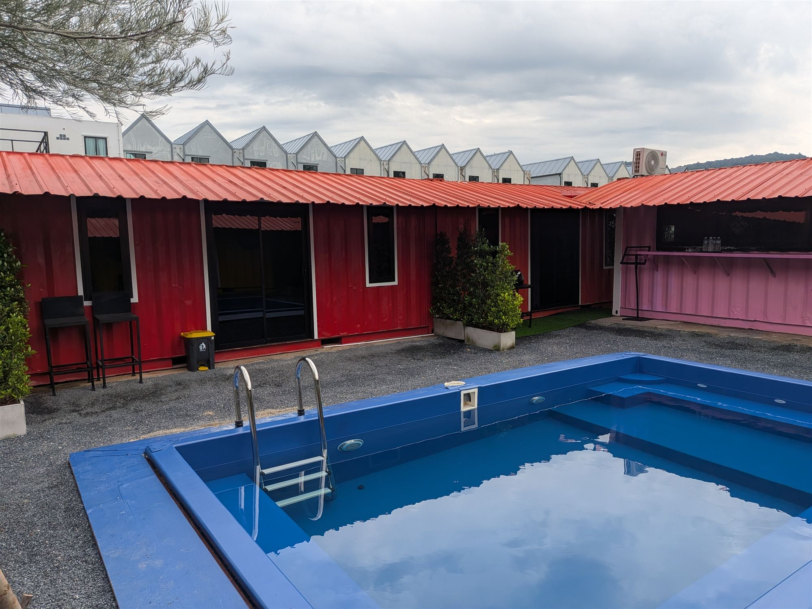
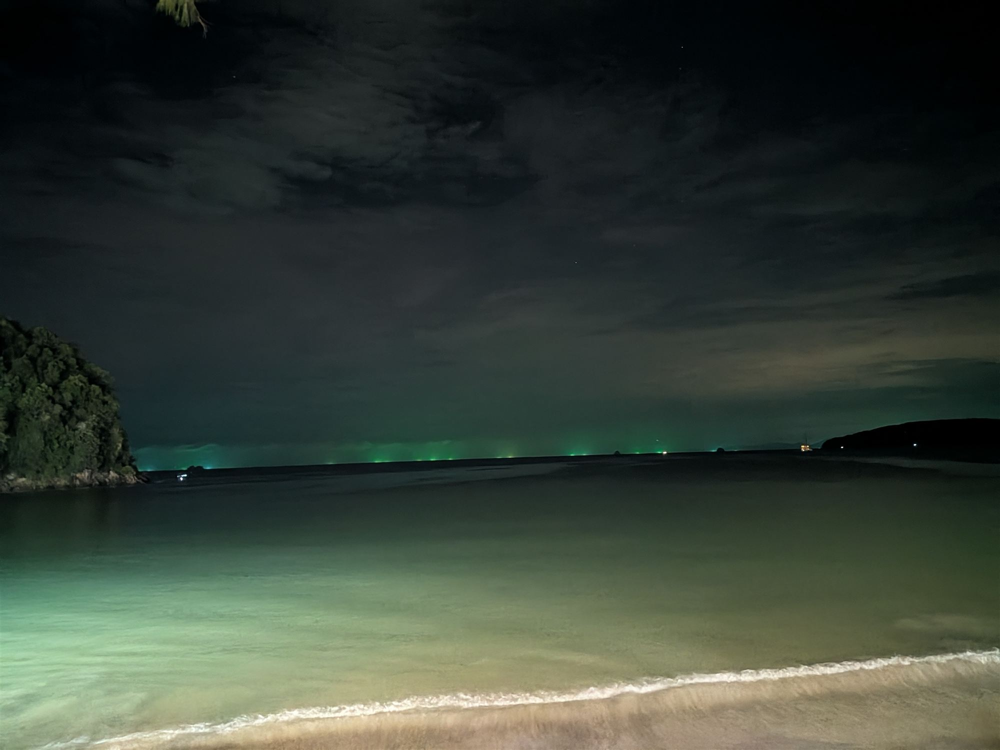

Inselhopping
Four Islands, Hong Islands, Phi Phi. Mit Longtail oder Speedboot, in der Gruppe oder privat.
Ab ฿ —
เดอะ บีช บ็อกซ์Container-Hostel · Ao Nang, Krabi
Gedämmte, klimatisierte Vierbettzimmer in bunt gestrichenen Schiffscontainern, rund um einen Pool und einen grünen Innenhof, nur wenige Schritte vom Noppharat Thara Beach.

Schick uns deine Reisedaten per WhatsApp oder LINE und wir reservieren dein Bett.
The Beach Box besteht aus umgebauten Schiffscontainern. Jeder hat seine eigene Farbe, und alle stehen unter einem roten Dach rund um einen grünen Innenhof. Jedes Zimmer hat vier Betten und eine eigene Klimaanlage. Du teilst es also mit drei Leuten, nicht mit dreißig.
Ein Schritt aus dem Tor und du stehst an der Strandstraße. Der Nachtmarkt, Cafés und ein 7-Eleven, der rund um die Uhr geöffnet hat, sind drei Gehminuten entfernt.


Buche ein einzelnes Bett oder nimm mit Freunden das ganze Zimmer. Die Bäder liegen in einem eigenen Gebäude, ein paar Schritte von deiner Tür.
Zimmer ansehen

Ein Pool wenige Schritte vom Bett und ein grüner Innenhof mit Sitzplätzen vor jeder Tür.
Ausstattung ansehenWir liegen am Noppharat-Thara-Ende von Ao Nang: am ruhigeren Strandabschnitt, mit Longtail-Booten zu den Inseln und dem Landmark Night Market ganz in der Nähe.
| Ort | Zu Fuß |
|---|---|
| Noppharat Thara Beach | etwa 30 Schritte |
| Starbucks, Ao Nang Landmark | 180 m · 3 Min. |
| 7-Eleven (24 Stunden geöffnet) | 230 m · 3 Min. |
| KFC, Ao Nang Landmark | 240 m · 3 Min. |
| Ao Nang Landmark Night Market | 300 m · 4 Min. |
| Fähranleger, Zentrum von Ao Nang, Flughafen Krabi | folgt |


Sag uns, worauf du Lust hast, und wir empfehlen dir den passenden Ausflug: in der Gruppe oder privat, mit Longtail oder Speedboot, halbtags oder ganztags.
Four Islands, Hong Islands, Phi Phi. Mit Longtail oder Speedboot, in der Gruppe oder privat.
Ab ฿ —
Kajaktouren durch die Mangroven, Schnorcheln, Bootsfahrten zum Sonnenuntergang.
Ab ฿ —
Tiger Cave Temple, Emerald Pool und heiße Quellen, Klettern in Railay.
Ab ฿ —

Streetfood-Runden über den Nachtmarkt, Thai-Kochkurse, Muay Thai.
Ab ฿ —
Abholung, Taxi oder Shuttle. Wir sagen dir schon vor der Landung, womit du rechnen musst.
฿ —
Wir holen dich in der Ankunftshalle ab und bringen dich bis vor die Tür. Frag einfach danach, wenn du uns schreibst.
฿ —
Festpreis-Schalter im Terminal oder der Shuttlebus nach Ao Nang.
฿ —
Die Erfahrung eines Gastes mit Fahrdienst-Apps am Flughafen, in eigenen Worten erzählt.
Schreib uns über die App, die du ohnehin nutzt. Wir antworten auf Englisch und Thai.
Alle Kontaktwege